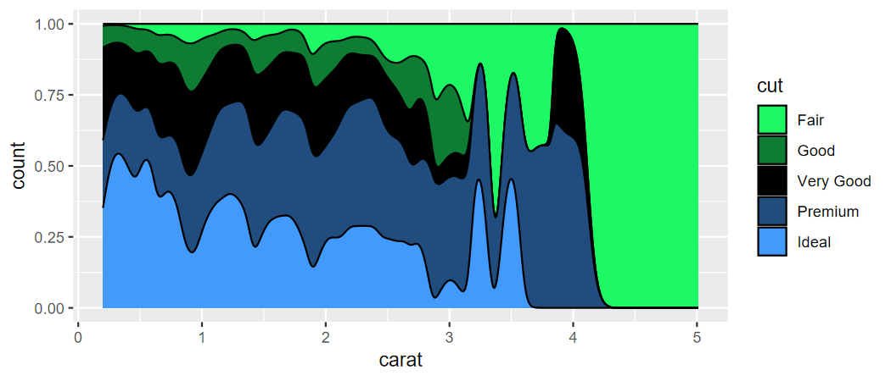
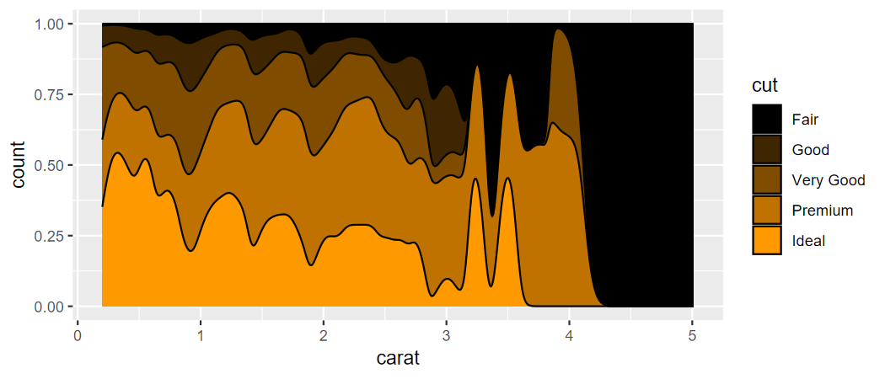

Author: Matthew Leonawicz
License: MIT


The trekcolors package provides a collection of color palettes based on Star Trek. It also offers functions for custom palettes and scale_* functions for use with ggplot2.
Installation
Install the CRAN release of trekcolors with
install.packages("trekcolors")
Install the development version from GitHub with
# install.packages("remotes") remotes::install_github("leonawicz/trekcolors")
Examples
Basics
library(trekcolors) library(ggplot2) trek_pal("starfleet") #> [1] "#5B1414" "#AD722C" "#1A6384" trek_pal("lcars_2357") #> [1] "#FFFF99" "#FFCC99" "#FFCC66" "#FF9933" "#664466" "#CC99CC" "#99CCFF" "#3366CC" "#006699" lcars_pal("2357") # there are some special functions for LCARS colors #> [1] "#FFFF99" "#FFCC99" "#FFCC66" "#FF9933" "#664466" "#CC99CC" "#99CCFF" "#3366CC" "#006699"
Preview the starfleet and lcars_2357 palettes.
view_trek_pals(c("starfleet", "lcars_2357"))

Scale functions for use with ggplot2
p <- ggplot(iris, aes(Sepal.Width, Sepal.Length, color = Species)) + geom_point(size = 5, alpha = 0.75) p + scale_color_trek() # starfleet is default palette

p <- ggplot(diamonds, aes(carat, price, color = clarity)) + geom_point() p + scale_color_lcars("2357") # equivalent to scale_color_trek("lcars_2357")
p <- ggplot(diamonds, aes(carat, stat(count), fill = cut)) + geom_density(position = "fill") p + scale_fill_trek("klingon")
p + scale_fill_trek("romulan")

p + scale_fill_trek("andorian")
p <- ggplot(diamonds, aes(carat, stat(count), fill = cut)) + geom_density(position = "fill") p + scale_fill_lcars("2357")

p + scale_fill_lcars1("atomic-tangerine", dark = TRUE)

p + scale_fill_lcars2("pale-canary", "danub")

d <- diamonds[diamonds$cut >= "Very Good", ] p <- ggplot(d, aes(carat, stat(count), fill = cut)) + geom_density(position = "fill") p + scale_fill_trek("starfleet")

Palettes with named colors
The four LCARS palettes that have a year in their series name are special in that these official standard LCARS colors have formal names.
# lcars_pals() # print list of all LCARS palettes lcars_colors() # full set of unique names across the four palettes #> pale-canary tanoi golden-tanoi neon-carrot eggplant lilac anakiwa mariner bahama-blue blue-bell #> "#FFFF99" "#FFCC99" "#FFCC66" "#FF9933" "#664466" "#CC99CC" "#99CCFF" "#3366CC" "#006699" "#9999CC" #> melrose hopbush chestnut-rose orange-peel atomic-tangerine danub indigo lavender-purple cosmic red-damask #> "#9999FF" "#CC6699" "#CC6666" "#FF9966" "#FF9900" "#6688CC" "#4455BB" "#9977AA" "#774466" "#DD6644" #> medium-carmine bourbon sandy-brown periwinkle dodger-pale dodger-soft near-blue navy-blue husk rust #> "#AA5533" "#BB6622" "#EE9955" "#CCDDFF" "#5599FF" "#3366FF" "#0011EE" "#000088" "#BBAA55" "#BB4411" #> tamarillo #> "#882211" lcars_2357() # specific color series; also 2369, 2375, 2379 #> pale-canary tanoi golden-tanoi neon-carrot eggplant lilac anakiwa mariner bahama-blue #> "#FFFF99" "#FFCC99" "#FFCC66" "#FF9933" "#664466" "#CC99CC" "#99CCFF" "#3366CC" "#006699" lcars_2357("lilac", "mariner") # select by name #> lilac mariner #> "#CC99CC" "#3366CC"
Custom palettes
In addition to these and all the other predefined palettes, custom palettes can be constructed using official LCARS color names. This is like colorRampPalette but with the ability to recognize official LCARS color names. This functionality was leveraged by scale_color_lcars1 and scale_color_lcars2 seen above when making sequential or divergent palettes based on specific LCARS colors for use with ggplot.
lcars_custom_pal <- lcars_colors_pal(c("pale-canary", "eggplant")) lcars_custom_pal(8) #> [1] "#FFFF99" "#E9E491" "#D3C98A" "#BDAE83" "#A7947B" "#917974" "#7B5E6D" "#664466" p <- ggplot(diamonds, aes(carat, stat(count), fill = cut)) + geom_density(position = "fill") p + scale_fill_lcars2("pale-canary", "danub")

# p + scale_fill_manual(values = lcars_custom_pal(8)) # equivalent p + scale_fill_lcars2("pale-canary", "danub", divergent = TRUE)

p + scale_fill_lcars2("pale-canary", "danub", dark = TRUE, divergent = TRUE)

All predefined palettes
# See available palette names trek_pal() #> [1] "andorian" "bajoran" "borg" "breen" "breen2" "dominion" "enara" #> [8] "enara2" "ferengi" "gorn" "iconian" "klingon" "lcars_series" "lcars_2357" #> [15] "lcars_2369" "lcars_2375" "lcars_2379" "lcars_alt" "lcars_first_contact" "lcars_nemesis" "lcars_nx01" #> [22] "lcars_29c" "lcars_23c" "lcars_red_alert" "lcars_cardassian" "romulan" "romulan2" "starfleet" #> [29] "starfleet2" "tholian" "terran" "ufp" "red_alert" "yellow_alert" "black_alert" # view all predefined palettes view_trek_pals()

Packages in the trekverse

rtrek: The core Star Trek package
Datasets related to Star Trek, API wrappers to external data sources, and more.

lcars: LCARS aesthetic for Shiny
Create Shiny apps based on the Library Computer Access/Retrieval System (LCARS).

trekcolors: A color palette package
Predefined and customizable Star Trek themed color palettes and related functions.

Citation
Matthew Leonawicz (2020). trekcolors: Star Trek Color Palettes. R package version 0.1.2. https://CRAN.R-project.org/package=trekcolors
Contribute
Contributions are welcome. Contribute through GitHub via pull request. Please create an issue first if it is regarding any substantive feature add or change.
If you enjoy my open source R community contributions, please consider a donation :).
- Buy me a coffee in Ko-fi
leonawicz.cryptomfl$payid.crypto.com
Please note that the trekcolors project is released with a Contributor Code of Conduct. By contributing to this project, you agree to abide by its terms.